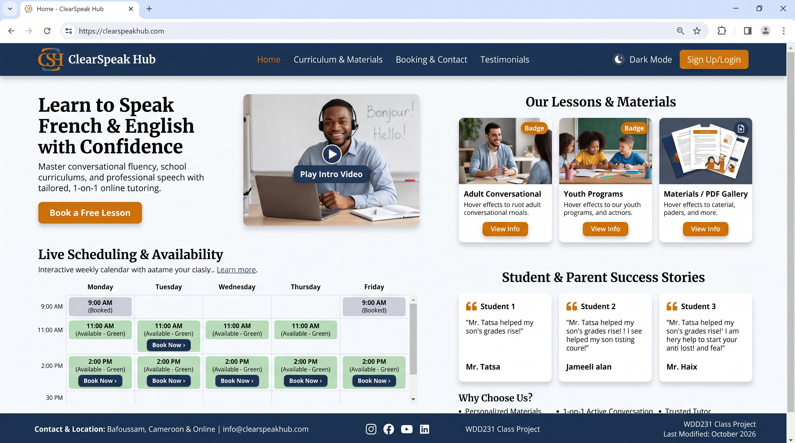

1. Site Name
Name: ClearSpeak Hub
Reason: This name conveys clarity, communication, and a central location for learning. It is highly relevant to a service focused on conversational English and French language mastery, representing a welcoming digital classroom for students to improve their fluency.
2. Site Purpose
The purpose of this website is to provide a professional online portal for prospective and current language students. The site will offer detailed information regarding lesson structures for adults and youths, showcase custom pedagogical materials (such as slide decks and vocabulary workbooks), and provide a streamlined way to view available scheduling slots and contact the tutor.
3. Scenarios
These questions represent the target audience (adult professionals seeking fluency and parents booking lessons for children):
- "How can I view the tutor's availability to secure a recurring Tuesday or Thursday conversational English slot?"
- "Where can I find and download the French grammar and vocabulary workbooks required for this week's lesson?"
4. Color Scheme
The following colors are utilized on this site plan document and will be applied to the final website to create a professional, academic, and trustworthy aesthetic:
| Color Palette | Hex Code | Application |
|---|---|---|
| Deep Navy | #1A365D | Primary branding, headers, footer background, and main headings. |
| Off-White | #F8FAFC | Primary background color for the main body to ensure high text contrast. |
| Warm Amber | #D97706 | Call-to-action buttons, active navigation links, and accent borders. |
| Slate Gray | #334155 | Standard paragraph text and secondary information. |
5. Typography
The following Google Fonts are actively applied to this document:
- Headings: Merriweather. Used for the site title and all section headers to provide a traditional, authoritative, and highly readable academic feel.
- Body Text: Open Sans. Used for all paragraphs, lists, and general UI text. Its clean sans-serif design ensures excellent legibility across mobile and desktop screens.
6. Wireframes
Below are the structural wireframes for the mobile and desktop views of the home page. (Note: AI-generated HTML wireframes are not permitted; these represent hand-drawn structural sketches).
Mobile View
Features a stacked, single-column layout with a prominent CTA button below the hero image.
Desktop View

Features a multi-column CSS grid layout, allowing the curriculum highlights and testimonials to sit side-by-side.